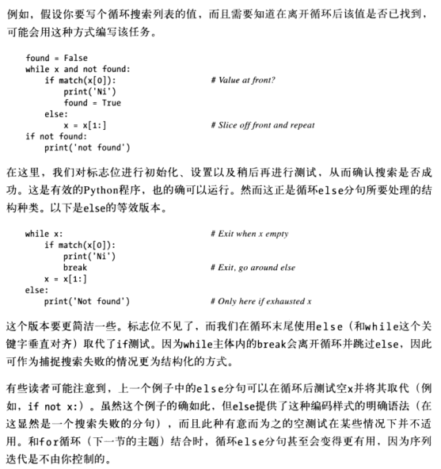
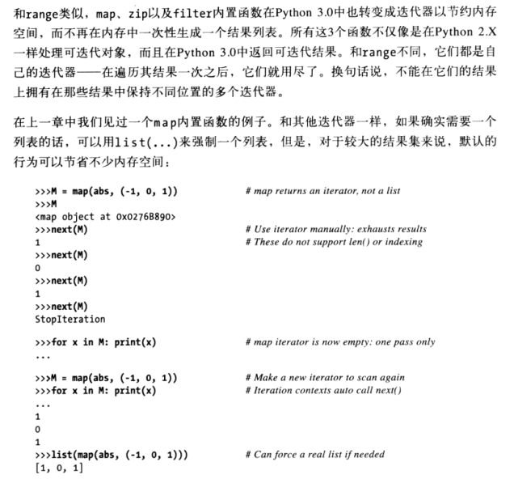
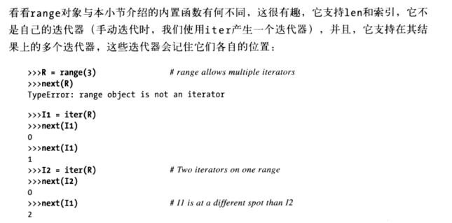
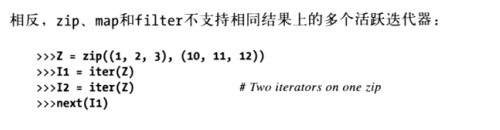
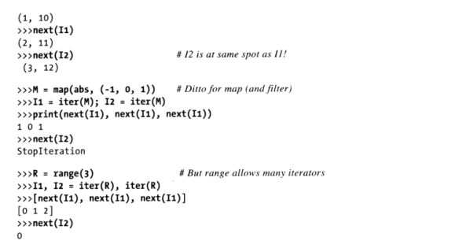
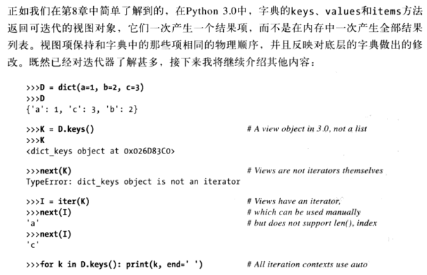
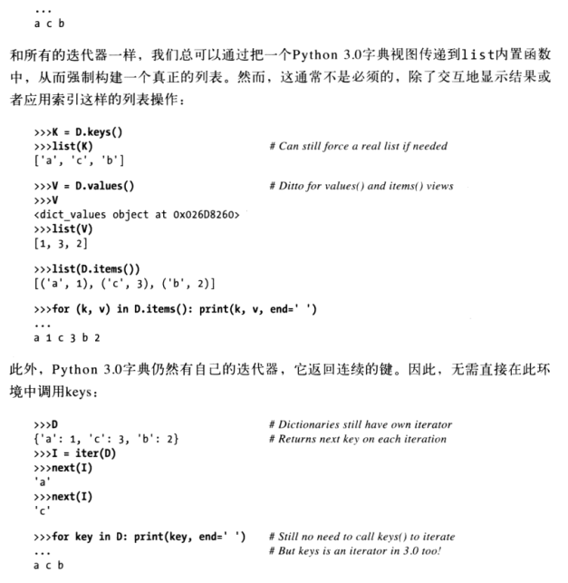
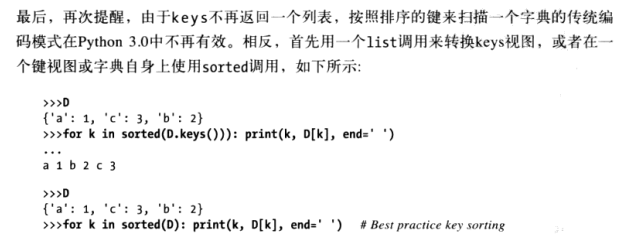
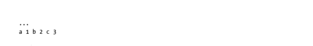

继续语句语法的学习。
while 和 for 循环
while 循环一般格式:
while <test>:
<statements1>
else:
<statements2> #如果循环不是由break结束时，会执行
break、continue、pass 和循环 else
- break，跳出最近所在的循环（路过整个循环语句）
- continue，跳到最近所在循环的开头处（来到循环的首行）
- pass，什么事也不做，只是空占位语句
- 循环 else 块，只有当循环正常离开时才会执行（也就是没有碰到 break 语句）
一般循环格式
while <test1>:
<statements1>
if <test2>: break
if <test3>: continue
else:
<statements2>
break 和 continue 可以出现在 while(或for)循环主体的任何地方，但通常会进一步嵌套在 if 语句中，根据某些条件来采取对应的操作。
pass
pass 语句是无运算的占位语句，当语法需要语句并且还没有任何实用的语句可写时，就可以使用它。它通常用于为复合语句编写一个空的主体。例如，想写个无限循环，每次迭代时什么也不做，就写个 pass。
while True: pass # Type Ctrl-C to stop me!
Python 3.0 允许在可以使用表达式的任何地方使用 ...（三个连续的点号）来省略代码。
def func1():
...
def func2():
...
func1()
continue
break
循环else
和循环else 子句结合时，break 语句通常可以忽略其他语言中所需的搜索状态标志位。
如果循环主体从没有执行过，循环 else 分句也会执行，因为循环没有执行到 break 语句。

如下的常见于C语言编码的代码，在Python中是行不通的：
while ((x = next()) != NULL) {...process x...}
C赋值运算会返回赋值后的值，但Python赋值语句只是语句，不是表达式。这样就排除了一个众所周知的C的错误（当使用”==”时，在Python中会不小心打成”=”）。但是如果需要类似的行为，可以编写其他代码达到相等的效果，而不是在循环测试中嵌入赋值语句。
for循环
for <target> in <object>:
<statements>
else:
<statements>
for循环运行时，会逐个将序列对象中的元素赋值给目标，然后为每个元素执行循环主体。循环主体一般使用赋值的目标来引用序列中当前的元素，就好像那是遍历序列的游标。
for首行中用作赋值目标的变量名通常是for语句所在作用域中的变量（可能是新的）。循环结束后，这个变量一般都还是引用了最近所用过的元素，也就是序列中最后的元素，除非通过一个break语句退出了循环，才有可能不是引用序列中最后的元素。
并行遍历：zip 和 map
zip函数让我们使用for循环来并行使用多个序列。在基本运算中，zip会取得一个或多个序列为参数，然后返回元组的列表，将这些序列中的并排的元素配成对。
>>> L1 = [1,2,3,4]
>>> L2 = [5,6,7,8]
要合并这些列表中的元素，我们可以使用zip来创建一个元组对的列表（和range一样，zip在Python3.0中也是一个可迭代对象，因此，我们必须将其包含在一个list调用中以便一次性显示所有结果）：
>>> zip(L1,L2)
[(1, 5), (2, 6), (3, 7), (4, 8)] #这个结果在Python3.0中可能是<zip object at ...>
>>> list(zip(L1,L2))
[(1, 5), (2, 6), (3, 7), (4, 8)]
搭配for循环时，它就支持并行迭代：
>>> for (x,y) in zip(L1,L2):
print(x,y,'--',x+y)
1 5 -- 6
2 6 -- 8
3 7 -- 10
4 8 -- 12
严格来讲，zip函数比这个例子所示意的更为一般化。例如，zip可以接受任何类型的序列（其实就是任何可迭代的对象，包括文件），并且可以有两个以上的参数。对于3个参数，它构建了3元素元组的一个列表，其中带有来自每个序列的元素，基本上按照列对应。
当参数长度不同时，zip会以最短序列的长度为准来截断所得到的元组。
>>> L1
[1, 2, 3, 4]
>>> L2
(5, 6, 7)
>>> zip(L1,L2)
[(1, 5), (2, 6), (3, 7)]
Python 2.6中的map的等价形式
在Python 2.X中，相关的内置map函数，用类似方式把序列的元素配对起来，但是如果参数长度不同，则会为较短的序列用None补齐（而不是按最短的长度截断）：
>>> s1
'abc'
>>> s2
'xyz123'
>>> map(None, s1,s2)
[('a', 'x'), ('b', 'y'), ('c', 'z'), (None, '1'), (None, '2'), (None, '3')]
这个例子其实是使用内置map函数的退化形式，Python 3.0不再支持该函数，一般来讲，map会带一个函数，以及一个或多个的序列参数，然后把从序列中取出的并行元素调用函数的结果收集起来。
使用zip构造字典
当键和值的集合必须在运行时计算时，zip 函数也可用于产生字典，并且使用非常方便。
>>> keys = ["spam", "eggs", "toast"]
>>> vals = [1,3,5]
将这些列表变成字典的一种做法就是将这些字符串 zip 起来，并通过 for 循环并行步进处理。
>>> list(zip(keys, vals))
[('spam', 1), ('eggs', 3), ('toast', 5)]
>>> D2 = {}
>>> for (k,v) in zip(keys, vals): D2[k] = v
>>> D2
{'toast': 5, 'eggs': 3, 'spam': 1}
不过，在 Python 2.2和后续版本中，可以跳过 for 循环，直接把 zip 过的键/值列表传给内置的 dict 构造函数。
D3 = dict(zip(keys, vals))
>>> D3
{'toast': 5, 'eggs': 3, 'spam': 1}
内置变量名 dict 其实是 Python 中的类型名称。对它进行调用的时候，可以得到类似列表到字典的转换，但这其实是一个对象构造的请求。
产生偏移的元素：enumerate
>>> S = 'spam'
>>> for (offset, item) in enumerate(S):
print(item, 'appears at offset', offset)
('s', 'appears at offset', 0)
('p', 'appears at offset', 1)
('a', 'appears at offset', 2)
('m', 'appears at offset', 3)
enumerate 函数返回一个生成器对象：这种对象有一个 next 方法，由下一个内置函数调用它，并且循环中每次迭代的时候它会返回一个(index, value)的元组。我们可以在 for 循环中通过元组赋值运算将元组解包。
>>> E = enumerate(S)
>>> E
<enumerate object at 0x0276FE40>
>>> next(E)
迭代器
迭代器比较难理解，看一次没什么感觉（像迭代协议），后面还要反复看
如果对象是实际保存的序列，或者可以在迭代工具环境中（例如，for循环）一次产生一个结果的对象，就看做是可迭代的。
文件迭代器
逐行读取文本文件的最佳方式就是根本不要去读取，其替代的办法就是，让for循环在每轮自动调用next从而前进到下一行。相同效果的原始方式，是以for循环调用文件的readlines方法，将文件内容加载到内存，做成行字符串的列表，这个办法是一次把整个文件加到内存，如果文件太大，容易导致计算机内存空间不足，甚至不能工作。而一次读一行，迭代器版本对这类内存爆炸的问题就有了免疫能力。
手动迭代： iter 和 next
在Python 2.6中，迭代方法next()是next()，在Python 3.0中才是next()，为了可移植性，内置函数next(X)在Python 2.6中也是可以用的，但在更早的版本不可以，并且next(X)调用Python 2.6的X.next()而不是Python 3.0的X.next()。在Python 2.6中所有其他方式中，迭代都是一样工作的，只是在手动迭代中直接使用X.next()或next(X)，而不是Python 3.0的X.next()。在Python 2.6之前的版本中，应该使用手动X.next()调用而不是next(X)。—-来自《Python学习手册》
为了支持手动迭代代码（用较少的录入），Python 3.0还提供了一个内置函数 next，它会自动调用一个对象的 next 方法。给定一个可迭代对象 X，调用 next(X) 等同于 X.next()，但前者简单很多。
列表以及很多其他的内置对象，不是自身的迭代器（文件对象是自己的迭代器，它有自己的next方法），因为它们支持多次打开迭代器。对这样的对象，我们必须调用iter来启动迭代：
>>> L = [1,2,3]
>>> iter(L) is L
False
>>> L.__next__()
AttributeError: 'list' object has no attribute '__next__'
>>> I = iter(L)
>>> I.next() #在Python 3.0中应该是 I.__next__()
1
>>> I.next() #在Python 3.0中应该等同是 I.__next__() 或 next(I)
2
尽管Python迭代工具自动调用这些函数，我们也可以使用它们来手动地应用迭代协议。
其他内置类型的迭代器
除了文件以及像列表这样的实际的序列外，其他类型也有适用的迭代器。如遍历字典键的经典方法是明确地获取其键的列表。
>>> D = {1:2, 2:3, 3:4}
>>> for key in D.keys():
print (key, D[key])
1 2
2 3
3 4
不过，在最近的Python版本中，字典有一个迭代器，在迭代环境中，会自动一次返回一个键
>>> I = iter(D)
>>> next(I) #Python 2.6以前版本应该是 I.next()
1
>>> next(I) #Python 2.6以前版本应该是 I.next()
2
>>> next(I) #Python 2.6以前版本应该是 I.next()
3
>>> next(I) #Python 2.6以前版本应该是 I.next()
Traceback (most recent call last):
File "<pyshell#26>", line 1, in <module>
I.next()
StopIteration
直接的效果就是，不再需要调用keys()方法来遍历字典键，for循环将使用迭代协议在每次迭代的时候获取一个键：
>>> for key in D:
print (key, D[key])
1 2
2 3
3 4
可迭代的对象一次返回一个结果，而不是一个实际的列表：
>>> R = range(5)
>>> R
[0, 1, 2, 3, 4]
>>> I = iter(R)
>>> I.next()
0
>>> I.next()
1
>>> I.next()
2
列表解析
>>> L = [1,2,3,4,5]
>>> L = [x + 10 for x in L]
>>> L
[11,12,13,14,15]
扩展的列表解析语法
>>> L = [1,2,3,4,5]
>>> L = [x for x in L if x%2==0]
>>> L
[2, 4]
range迭代器
在Python 3.0中，它返回一个迭代器，该迭代器根据需要产生范围中的数字，而不是在内存中构建一个结果列表（在Python 2.X中是产生结果列表）。如果需要一个范围列表的话，需要使用list(range(…))来强制一个真正的范围列表。
和在Python 2.x中调用range返回列表不同，Python 3.0中的range对象只支持迭代、索引、以及len函数。它们不支持任何其他的序列操作（如果需要更多列表工具的话，使用list(…)）。
版本差异：Python 2.x也有一个名为xrange的内置函数，它就像Python 3.0的range一样，根据需要产生元素而不是一次性在内存中构建一个结果列表。xrange在Python 3.0中被range取代，xrange不再可用。在Python 2.x中使用xrange可最小化内存，类似地，在Python 2.x中使用file.xreadlines()方法在Python 3.0中取消了，而是倾向于使用文件迭代。
map、zip和filter迭代器

多个迭代器 VS 单个迭代器



字典视图迭代器



